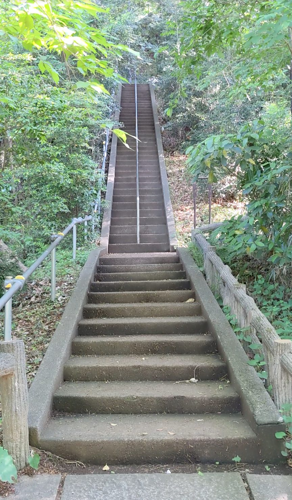
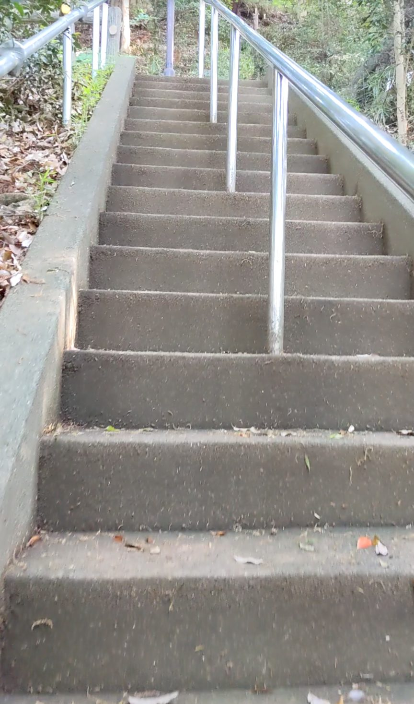
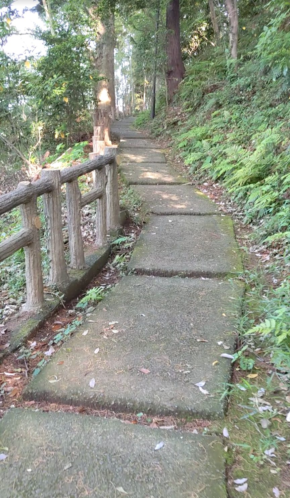
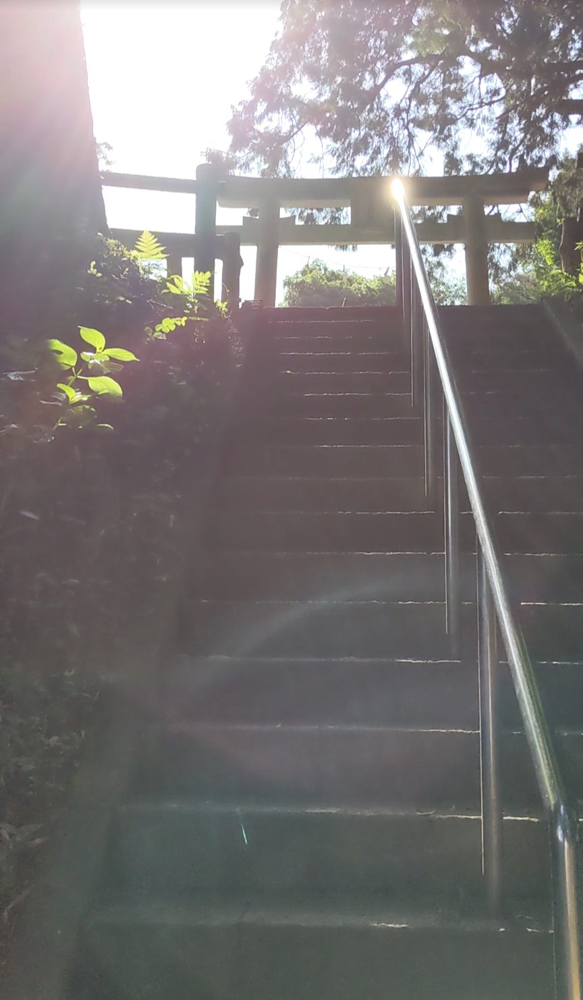
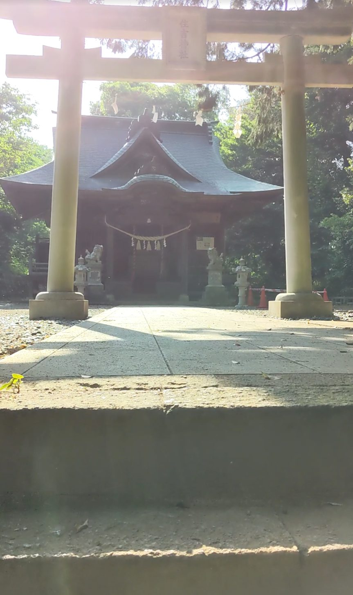

東京都八王子市にある片倉城跡公園は、城跡を整備した公園で、彫刻や銅像がいくつも置かれているアートな雰囲気のある場所です。京王線の京王片倉駅から徒歩約6分。公園内にある68段の階段は、序盤・中盤・終盤とまったく表情が変わる、登りごたえのある石段でした。夕方の光の中で住吉神社の鳥居が神々しく見えたのが、特に印象的でした。
京王線「京王片倉駅」下車、徒歩約6分。片倉城跡公園の入口から公園内に入り、案内に沿って進むと階段が見えてきます。
序盤は段差が高めなので、グリップのある歩きやすい靴がおすすめです。夕方は日が傾いて足元が暗くなる箇所もあるので、注意して歩きましょう。公園内は自然が豊かなので、虫よけがあると安心です。
片倉城跡公園に足を踏み入れると、あちこちに彫刻や銅像が配置されていて、「アートな公園だな」という印象を受けます。その雰囲気は階段にも表れていて、入口からしてただの石段ではありません。石段の形が整っていて、階段の両脇に沿うように丸太が配置されているのがオシャレです。銀色の手すりは光るほどきれいに磨かれていて、丁寧に管理されていることが伝わってきます。

登り始めると、序盤は段差が結構高めです。一段一段しっかり足を上げないといけない感じで、じわじわと足にきます。油断していると息が上がってくる、そんな手応えのある序盤です。

ところが中盤に差しかかると、雰囲気ががらりと変わります。石畳のような平らな道が続き、まるで森の中を歩いているかのような感覚になります。両脇の木々が迫ってきて、自然の中に包まれる静かな空間です。序盤の急登からのこの転換がとても心地よく、「まだ登っている途中なのにこんなに変わるのか」と驚きました。

そして終盤、住吉神社の鳥居が現れます。鳥居をくぐりながら石段を登る、というこの最後のシーンが特に印象的でした。夕方の時間帯に訪れたこともあって、斜めから差し込む光の中で鳥居がとても神々しく見えました。時間帯によってまったく違う表情を見せてくれる場所だと思います。

68段を登り切ると、頂上に住吉神社が鎮座しています。こじんまりとした印象ながらも、しっかりとした造りの立派な神社です。序盤の急登、中盤の森の石畳、終盤の鳥居と、これほど変化に富んだ68段はなかなかありません。ぜひ夕方に訪れて、鳥居から差し込む光を体感してみてください。
